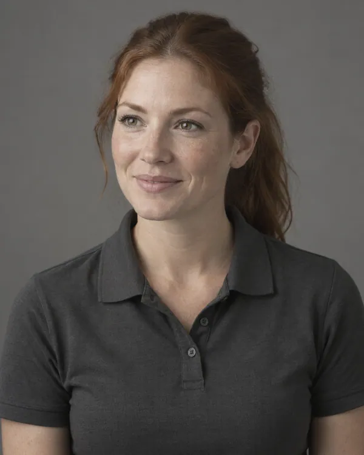

Clinic owner view. The numbered notes on each page explain what that part of the site does for the practice. Switch back to Patient view to read the site as a patient would.
For the things you want to get back to.
Start with what you want back.
A painful shoulder. A knee that slows the stairs. A recovery plan that needs to fit real life. Explore orthopedic care and physical therapy in one place.
Clinic owner note: Dana, our persona, is 52 and her knee stops her on the stairs. The hero speaks to her: what she wants back, one booking action, a call button, and three process facts instead of ratings or outcome numbers.
Where it hurts
Where does it hurt?
Pick the area, then where you are starting from. You’ll see the step people usually take first, the referral question and what to bring.
2
Clinic owner note: The body map does the routing your front desk does by phone. Area plus situation points to the right first appointment, so fewer calls are transferred between orthopedics and therapy, and the result rides into the booking link.
Body area
You chose
Knee
Where are you starting from?
A usual first step
Orthopedic consultation
Many people with a new knee concern start with an orthopedic consultation: a conversation and an examination before any plan is agreed.
What people often want back
Taking the stairs without planning around them
Kneeling in the garden
The weekend run or match
The referral question
Some plans want a referral from your primary care clinician before a specialist visit. Check with your plan before you book.
What to bring
The shoes you walk or train in most
Any imaging reports, and where the images were taken
Your medication list
Be ready to describe:What the knee does on stairs, slopes, squats and after sitting.
This site can’t assess an injury. It only shows where people usually start. For a medical emergency in the U.S., call 911. For personal health questions, contact a qualified care team.
Your first visit
How a first visit works
Three steps, about an hour in this sample schedule.
3
Clinic owner note: Dana’s biggest worry is being rushed toward surgery. This section shows the visit as talk, exam, plan, in that order, before any treatment word appears.
1
Talk
You start with a conversation: what changed, what is hard, and what you want to get back to.
2
Examine
The specialist examines the area. If imaging would help, they explain why and where.
3
Plan
You leave with a next step you understand: therapy, a follow-up, or more information first.
Clinic owner note: Biograph uses an outcomes band here. We use process facts instead: things the practice controls and can say truthfully, with no rates, ratings or years in business.
Our team
The people you’ll meet
Shown as roles. A real launch adds names, qualifications and approved photos.
Illustrative model
Orthopedic specialist
Examines the area, explains what is going on and the options, and agrees the plan with you.

Illustrative model
Physical therapist
Sets goals with you, guides each session and the home plan, and checks progress.
Illustrative model
Referral coordinator
Checks referrals and records, books the first visit and keeps everyone updated.
Illustrative model
Front desk and billing
Answers questions about plans and bills before and after your visit.
5
Clinic owner note: Role portraits stand in for a clinician grid until there are real, verified people to show. Patients still see who does what, and nobody is credentialed by the website.
Clinic owner note: Therapy is where the visits are, and where patients drift. The four-step sequence sets expectations up front, including the check-in that brings people back.
Locations
Two places, one plan
See a specialist at the Movement Center; do therapy at whichever is closer.
7
Clinic owner note: Location cards answer the calls a front desk gets most: where, when, parking and step-free access. Hours and details are marked sample.
Clinic owner note: Dana wants cost before she arrives. Insurer lists and prices are off the table, so the card gives her the three questions that prevent most orthopedic billing surprises.
For clinicians and offices
Referring a patient?
What to send, where it goes, who confirms.
9
Clinic owner note: Referrals drive orthopedic and PT volume, so referring offices get their own route from the homepage. The point is a referral that arrives with what intake needs to book it, without a call back for missing details.
What to send
Referring clinician and how to reach the office
Body area and the reason, in your words
Imaging done, and where the reports are held
Any precautions, such as after surgery
Where it goes
Through the practice’s approved secure route, never email or social media
To the referral coordinator, who checks it is complete
A real practice would list its fax or portal route here
Who confirms
The referral coordinator confirms receipt with your office
The coordinator contacts the patient to book
Therapy progress goes back to you at the plan’s check-ins
Read them, print them or download a copy. No email, no sign-up.
10
Clinic owner note: Each checklist is the free offer behind the social posts. There is no email gate: the patient arrives prepared, and every post has something useful to point at.
Clinic owner note: The FAQ holds the five questions a front desk answers all day, each ending in a link to the page that answers it properly.
ReferralsDo I need a referral?
It depends on your plan and on the rules where you live. Some plans want one before a specialist or therapy visit. Our in-depth article walks through both, and the referral checklist shows what a good referral includes.
Not always. Bring any reports you already have. If the specialist thinks imaging would help, they will explain why, and where it would happen. MRI is usually scheduled separately.